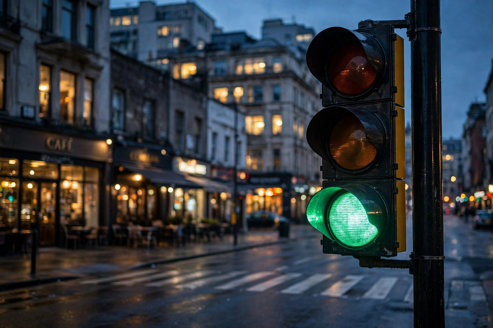

Traffic light
From Wikipedia, the free encyclopedia

A traffic signal at dusk.Traffic lights (traffic signals) are signalling devices at road junctions, pedestrian crossings and other points to control competing flows of traffic, cycling red–amber–green lights (with green arrows and pedestrian phases). The first, gas-lit and manually operated, stood outside London\'s Parliament in 1868; electric signals appeared in Cleveland in 1914, and the three-colour, four-way tower debuted in Detroit in 1920.
Operation
Controllers run fixed-time plans or respond to detectors (induction loops, cameras, radar); coordinated \'green waves\' smooth flow along arterials, and adaptive systems (SCOOT, SCATS) optimise in real time. Pedestrian signals, bicycle signals, bus priority and emergency-vehicle pre-emption are layered in.
Conventions
The Vienna Convention on Road Signs and Signals standardises meanings, though sequences differ: the UK uses red–amber before green; Germany similar; North America adds flashing modes. Yellow/amber duration and all-red clearance are set from junction geometry and speeds.
History and culture
J. P. Knight\'s 1868 gas semaphore exploded within a month, injuring its operator, and was removed; Lester Wire\'s 1912 Salt Lake City signal and Garrett Morgan\'s 1923 patent (sold to GE) mark milestones. Traffic lights are universal enough to be cultural symbols — and targets of debate as roundabouts and shared-space designs compete with them.